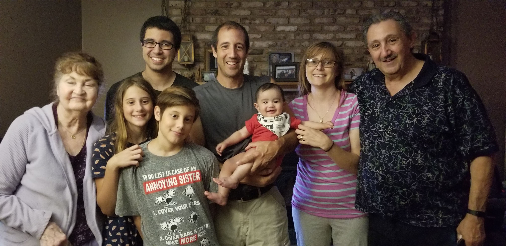
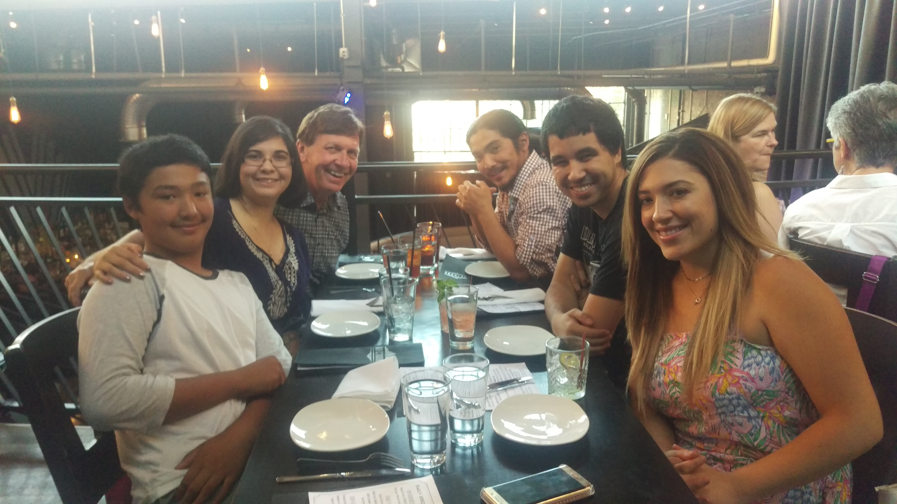
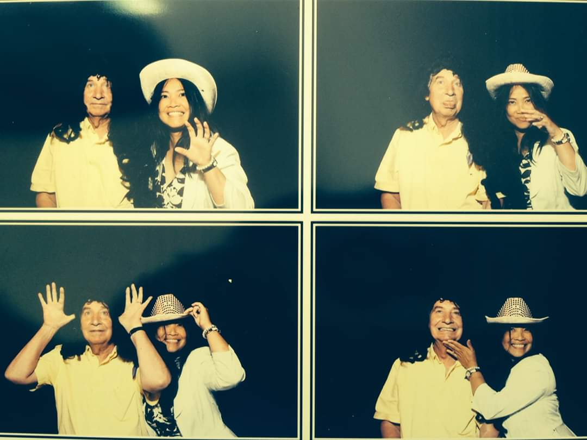
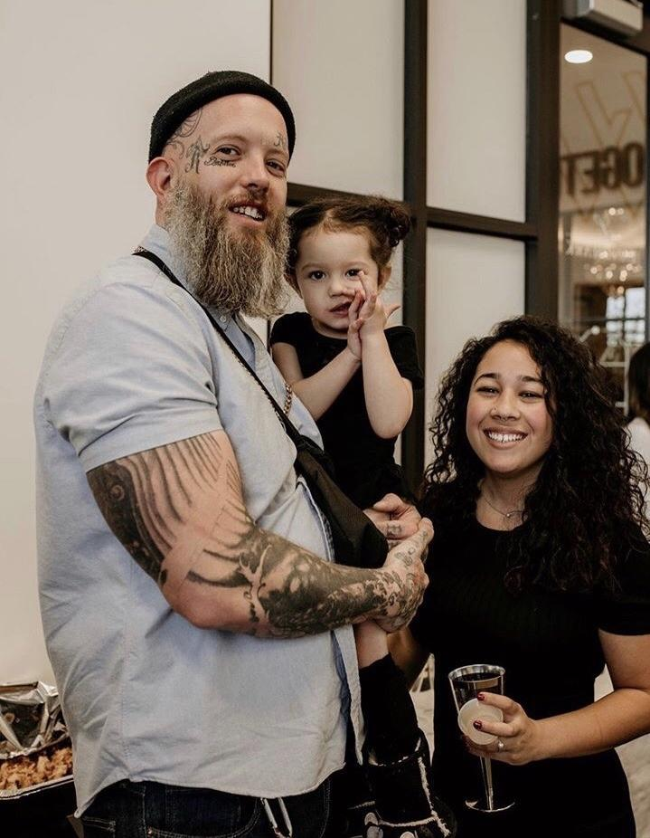

Archuleta Family
|
The Archuleta family includes Michiko & Julian Archuleta.
Julian has two children, Jordan and Samantha. Jordan is married to Angie,
together they have a son Julian.
Samantha is dating Carina who has 3 children, Yael, Yulie, and Valerie.
Michiko has two children, James and Hailey. James is married to Cheza,
together they have son Dorian. Hailey is married to Cody,
together they have a daughter, Dahlia.
Julian loves his car Rosie and works on her periodically.
He is the main cook of the family and also the go to man when something needs fixed.
Michiko is a teacher and works tirelessly to perfect her craft. She has a love for movies and camping.
|
The Essad Family includes Jeanne and Michael Essad Sr (pictured).
They have 4 children, Michael Jr., Shelia, Shannon, and Danielle.
Michael Jr. & Dawn have 2 children, Anthony and Anissa.
Michael has 2 other children from his previous marriage,
they
are James and Hailey.
Michael spends most of his time working as a tradesman,
in his downtime he enjoys tending to his pets and watching movies.
Dawn works as a special education teacher.
She loves to cook and spend time with her pets.
|

Essad Family
|

Goodman Family
|
The Goodman family includes Ken, Cheza, and Jonnel.
Ken is a retired school librarian. He spends the school year
as a subsitutue and the rest of the year travelling,
socializing, or going to the gym.
Jonnel is married to Trina (Oramos) and together they have a son,
Jeremiah. Jonnel works as a robot engineer for Amazon
and Trina is a professional hair stylist.
Cheza is married to James (Essad) and together they have a son, Dorian.
Cheza goes to school part-time for Programming
and Web Development and James is a mid-level backend programmer.
|
The Meyer family includes Clarissa (Griarte) and Fred Meyer (deceased).
Fred had three children: Joe, Erik, and Courtney.
Clarissa has two chrildren, Jonnel (Goodman) and Cheza (Essad).
Fred was a mortgage broker for his company, St. Could Mtg. He loved to
travel, play chess, and spend time with his wife.
Clarissa loves to read mystery novels, studies space & engineering,
and enjoys being a grandmother to Jeremiah and Dorian.
She spends her days at church or with friends from church.
The Griarte family includes Felipe (deceased) & Lydia. Together they
have three children: Clarissa, Cynthia, and Ning.
Cynthia (Griarte) Agapito has 4 children with Ian: Ieasu, Gianna, Yuie,
and Elijah. Cynthia works as a physical therapist and Ian works at a Christus hospital.
Ning has a son, Syb. She works at a health insurance office in the Philippines.
|

Griarte/Meyer Family
|

Wamsley Family
|
The Wamsley family includes Cody, Hailey, and their daughter Dahlia.
Hailey goes to school full-time studying to be a nurse. She loves Tim Burton movies and baking.
Cody works as a painter and tattoo artist. He loves to mix music and breakdance.
|